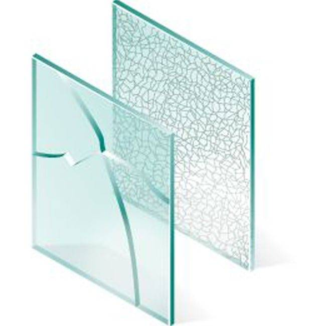
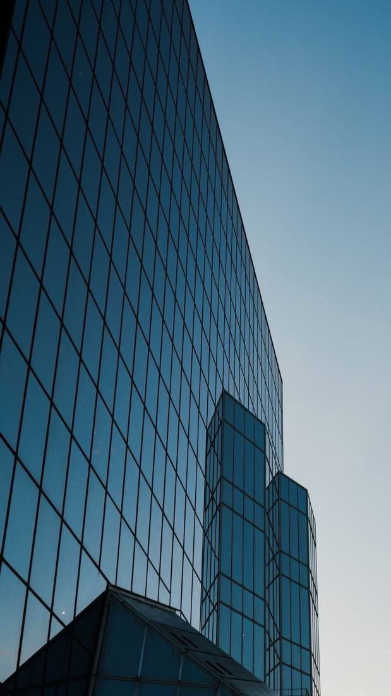
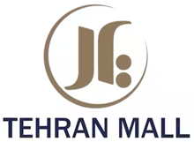
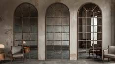
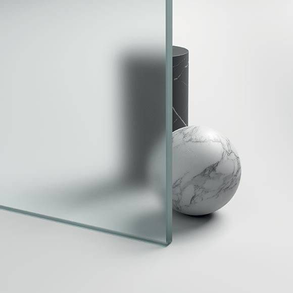

Tempered Glass
سکوریت
شیشه حرارتدیده برای درب، پارتیشن و ویترین
صنایع تولید شیشه سکوریت و آینه
تولید و فرآوری شیشههای ساختمانی، ایمنی و دکوراتیو با ابعاد و جزئیات متناسب با پروژه شما.


مجموعه تهرانمال مبلمان چوبنی
مبلمان چوبنیمحصولات و خدمات
کاربردها و نمونههای هر محصول را بررسی کنید.

شیشه حرارتدیده برای درب، پارتیشن و ویترین

ساختار چندلایه برای کاربردهای ایمنی

بازتاب نور برای دکور و فضاهای داخلی

محدود کردن دید با حفظ عبور نور

اجرای طرح و نقش دلخواه روی شیشه

برش شیشه و آینه برای فرمهای خاص

تراش دقیق و پرداخت لبه شیشه
شیشهای برای هر کاربرد، با دقتی که ماندگار است
جامکاران در زمینه تولید و فرآوری انواع شیشههای ساختمانی، دکوراتیو و ایمنی فعالیت میکند. ما تلاش میکنیم با تکیه بر تجربه، تجهیزات تخصصی و دقت در فرآیند تولید، شیشهای متناسب با نیاز پروژه ارائه دهیم.
از شیشههای مورد استفاده در دکوراسیون و مبلمان تا شیشههای ایمنی و ساختمانی، خدمات ما با توجه به نوع کاربرد، ابعاد و جزئیات موردنیاز پروژه انجام میشود.
برای ما، کیفیت فقط در محصول نهایی خلاصه نمیشود؛ دقت در اندازهگیری، توجه به جزئیات و پاسخگویی درست بخش مهمی از کاری است که انجام میدهیم.
توجه به ابعاد، الگو و مشخصات فنی هر سفارش.
خدمات متنوع برای پاسخگویی به نیازهای مختلف صنعت شیشه.
توجه به جزئیات برش و پرداخت متناسب با سفارش.
تعیین زمان تحویل و بررسی دقیق درخواست پیش از تولید.
شیشه سوپرکلیر با کاهش میزان آهن در ترکیب خود، شفافیت بالاتری نسبت به شیشه معمولی دارد و تهرنگ سبز آن کمتر دیده میشود. این ویژگی باعث نمایش طبیعیتر رنگها و وضوح بیشتر میشود؛ به همین دلیل در ویترینها، دکوراسیون داخلی و پروژههایی که شفافیت اهمیت دارد، انتخاب مناسبی است.
انتخاب ابعاد و ضخامت مناسب شیشه، به نوع کاربرد، محل نصب و شرایط پروژه بستگی دارد. شیشهها با توجه به مشخصات سفارش و محدودیتهای فنی تولید بررسی میشوند تا محصول نهایی متناسب با نیاز پروژه باشد.
رنگ شیشه نقش مهمی در جلوه بصری و هماهنگی آن با فضای معماری دارد. انتخاب رنگ مناسب میتواند میزان شفافیت، حس فضا و سبک طراحی را تحت تأثیر قرار دهد.
شیشه لاکوبل غیرشفاف است. رنگهای قابل سفارش مطابق موجودی و قابلیتهای مجموعه ارائه میشوند. برای اطلاع از رنگهای موجود، با کارشناسان مجموعه تماس بگیرید.
آینه در رنگبندی سفید و تینتهای برنز، طلایی، مشکی و رز گلد قابل سفارش است. رنگهای موجود مطابق قابلیتهای مجموعه ارائه میشوند.
رنگهای لاکوبل غیر از سفید و مشکی فقط در سفارشهای با تیراژ بالا پذیرفته میشوند و شیشه لاکوبل غیرشفاف است.
با دستمال نرم و تمیز و شیشهپاککن ملایم سطح شیشه را پاک کنید.
برای پاککردن لکهها از اسکاچ، تیغ و ابزار تیز یا زبر استفاده نکنید.
از ضربه مستقیم به لبهها و گوشههای شیشه خودداری کنید.
در صورت دیدن ترک یا آسیب روی سطح یا لبه، موضوع را با کارشناسان مجموعه در میان بگذارید.
ایمنی شیشه فقط به ظاهر و ضخامت آن محدود نمیشود. ویژگیهای فنی و عملکرد شیشههای ایمنی باید بر اساس الزامات و روشهای آزمون استانداردهای مربوطه ارزیابی شود.
در جامکاران، کیفیت و ایمنی شیشهها را با توجه به نوع محصول، کاربرد و الزامات فنی پروژه در نظر میگیریم تا محصول نهایی برای کاربرد موردنظر، الزامات مربوطه را تأمین کند.
استانداردهای مرتبط با شیشههای ساختمانی و ایمنی، مبنای کنترل کیفیت و ارزیابی عملکرد محصولات هستند.
شیشه سکوریت با فرآیند حرارتی ویژه، مقاومت بیشتری در برابر ضربه و تغییرات دمایی پیدا میکند و هنگام شکست به قطعات کوچکتر تبدیل میشود. شیشه لمینت از اتصال چند لایه شیشه با یک لایه میانی ساخته میشود که در صورت شکست، قطعات را در کنار هم نگه میدارد. انتخاب نوع شیشه به کاربرد و الزامات پروژه بستگی دارد.
شیشهها در ضخامتهای مختلف متناسب با نوع محصول و نیاز پروژه قابل سفارش هستند. برای اطلاع از ضخامتهای قابل تولید و انتخاب گزینه مناسب، با کارشناسان مجموعه تماس بگیرید.
زمان استاندارد آمادهسازی سفارش معمولاً ۷ روز کاری است. این زمان با توجه به نوع شیشه، ابعاد و مشخصات سفارش ممکن است متفاوت باشد.
در صورت وجود ظرفیت تولید، امکان بررسی سفارش فوری و تحویل یکروزه وجود دارد. سفارشهای فوری شامل ۱۰٪ هزینه اضافی هستند و نیاز به تأیید مجموعه دارند.
لطفاً یک روز پیش از مراجعه، تماس بگیرید و آماده بودن سفارشتان را تأیید کنید. گاهی شیشه در مرحلهٔ سکوریت شدن داخل کوره میشکند و لازم است دوباره تولید شود. در این حالت ممکن است زمان تحویل تغییر کند.
بله، امکان بررسی و تولید سفارشهای سفارشی متناسب با ابعاد و نیاز پروژه وجود دارد. خدماتی مانند برش بر اساس الگو و چاپ سفارشی نیز با توجه به مشخصات فنی و قابلیت تولید قابل ارائه هستند.
بله، سفارش شیشه ۴ میلیمتری در ابعاد بزرگتر از ۲۰۰ × ۱۰۰ سانتیمتر پذیرفته نمیشود. برای ابعاد بزرگتر، باید ضخامت مناسب با توجه به شرایط پروژه بررسی شود.
خیر، قیمت نمایشدادهشده در بخش تخمین قیمت سایت، تخمینی و بر اساس اطلاعات واردشده است. قیمت نهایی پس از بررسی مشخصات سفارش، نوع شیشه، ابعاد و خدمات موردنیاز توسط کارشناسان مجموعه اعلام میشود.
برای شیشهای که از جامکاران تهیه میکنید، سکوریت، برش، چاپ و دیاموند بهصورت پیشفرض و بدون اجرت انجام میشود. اجرت فقط برای مشتریای محاسبه میشود که شیشه خام خودش را میآورد و فرآوری میخواهد؛ مبلغ آن با توجه به نوع فرآوری، ابعاد و مشخصات سفارش تعیین و پس از بررسی سفارش اعلام میشود. هزینه سایر خدمات، مانند سندبلاست و لمینت، نیز پس از بررسی سفارش اعلام خواهد شد.
بله، پس از گذشت ۴۸ ساعت از زمان اعلام آمادهشدن سفارش، هزینه انبارداری به ازای هر مترمربع، روزانه ۳۰٬۰۰۰ ریال محاسبه میشود.
شرایط ارسال سفارش به خارج از شهر و هماهنگی خدمات نصب، با توجه به موقعیت پروژه و نوع سفارش قابل بررسی است. برای اطلاع از امکان ارائه این خدمات، با کارشناسان مجموعه تماس بگیرید.
شرایط پرداخت و میزان پیشپرداخت با توجه به نوع و حجم سفارش تعیین میشود. جزئیات پرداخت هنگام ثبت سفارش و پیش از شروع فرآیند تولید توسط کارشناسان اعلام خواهد شد.
برای بررسی و ثبت سفارش، ارائه اطلاعاتی مانند نوع شیشه، ضخامت، ابعاد، تعداد، نوع فرآوری و در صورت وجود، طرح یا الگوی موردنظر ضروری است. برای دریافت قیمت دقیقتر، میتوانید مشخصات پروژه را از طریق راههای ارتباطی مجموعه ارسال کنید.
ارتباط با ما
اتوبان آیتالله سعیدی، چهاردانگه، ورودی جدید شهرک صنعتی، خیابان ناصر، پلاک ۲۳